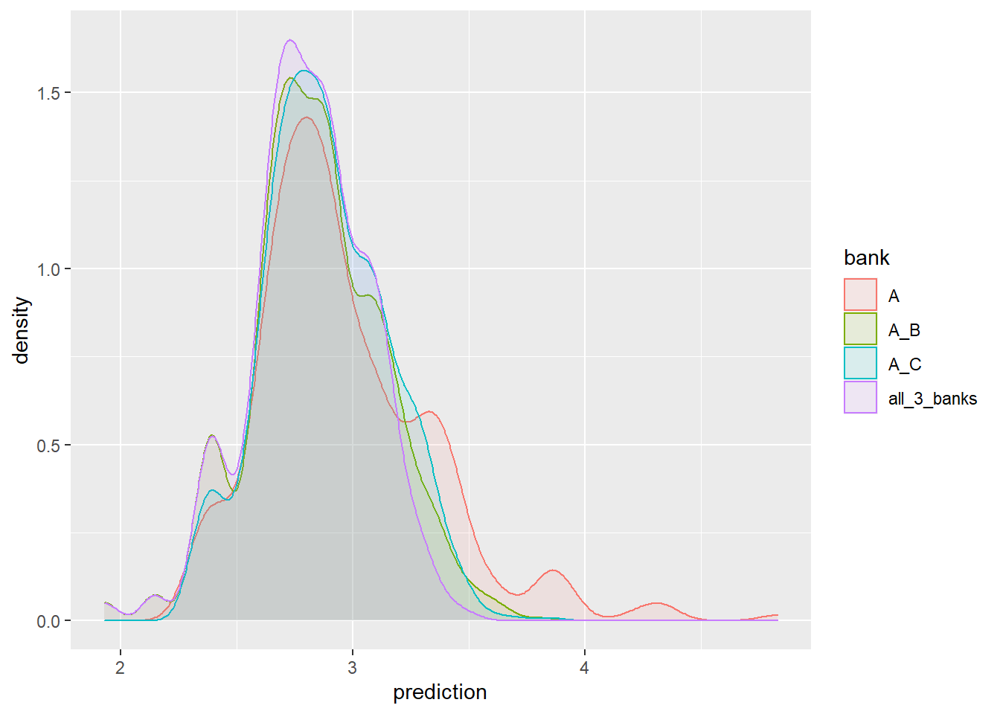
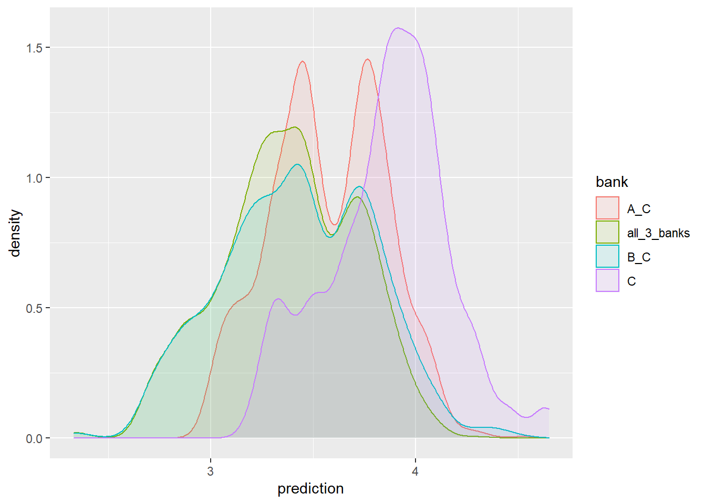

pacman::p_load(tidyverse,furrr)
options(scipen = 999, digits = 3)
# data bases
load('mortgage_data/data_1_raw_database_v2.Rdata')
map(ls(), ~ dim(get(.)))[[1]]
[1] 25779 50
[[2]]
[1] 26958 50
[[3]]
[1] 44944 50This is a short explanation of how we did the simulation in the mortgage research. For more information one can read the final report or the drat with the anexxes .
A while back, we collected mortgage data from the 3 largest banks over a time span of 3 years. It took me several month to build a data set that unifies all variables shared by the 3 banks. As we learned the data, we observed substantial price dispersion between customers, even though we practically had everything the bank documented about the loan.
Linear models presented varying residual dispersion between non-bidders (consumers that don’t get another bid from another bank) and bidders. Also, our estimates of the effect of extra bid on the price consumer will pay seemed small. Our qualitative information about the market suggested that there are substantial search costs consumers endure. So, we wanted to exemplify what should be the change in price in a frictionless environment when the customer gets more bids before purchase of a mortgage loan.
As in Woodward & Hall (2012) we use the quantile regression’s estimates to reconstruct the predicted price distribution for every observation in the sample. In other words, we get a price distribution that match the borrower and the transaction.
We shall regress 3 different models for each of 3 different banks. Then, for each observation, we’ll predict 99 quantiles in each of the 3 banks. Hence we construct a predicted price distribution for this customer in each bank.
Next in the simulation implementation, there are two options:
In each draw, the customer draws a triplet of values in [1:99], every value in the triplet corresponds to a specific bank. So, he might be in quantile 12 in bank A, quantlie 50 in bank B and another value in bank C. Specifically, In this method we simply assume that the unobserved part is random and the choice of quantile has nothing to do with the customer’s characteristics.
The customer quantile is fixed between banks. Here, we can simply plot the values for the predictions without performing a simulation. The underlying assumption is that there are unobservable to the researcher but the bank and the customer both know the values of those unobservable.
We shall go with option (1), It’s more interesting.
Based on the 3 distributions we will assume that the customer gets bids from one, two or three banks. When she bids more than one bank, in each draw we choose the lower price of the bids.
Finally, we present four price distributions in a plot. A distribution when the customer is a non-bidder, two more when the customer ask a big from a second bank, and one when the customer asks bids from all 3 banks.
pacman::p_load(tidyverse,furrr)
options(scipen = 999, digits = 3)
# data bases
load('mortgage_data/data_1_raw_database_v2.Rdata')
map(ls(), ~ dim(get(.)))[[1]]
[1] 25779 50
[[2]]
[1] 26958 50
[[3]]
[1] 44944 50We get data sets of mortgage loans from 3 different banks. These file have been unified so all features (explanatory variables) are in same scale and have a meaning in regression.
ls()[1] "df_bank_A" "df_bank_B" "df_bank_C"This a simplified regression equation. In our original data there are about 50 features, numeric and paregoric. For running quantile regression on the lowed and highest quantiles one need a rich data-set otherwise the model will not converge.
reg_formula <-
formula("interest ~ LTV + Purpose + service_commission + asset_type +
log_sum_loan_app + log_asset_value + log_disposable_income +
demographics +
load_porfilio_fixed_effects +
amortization_periods,
time_fixed_effect")taus <- 1:99/100
c(head(taus), "....", tail(taus)) [1] "0.01" "0.02" "0.03" "0.04" "0.05" "0.06" "...." "0.94" "0.95" "0.96"
[11] "0.97" "0.98" "0.99"Here I use the package furrr that implements parallel computing to the purrr map functions with ‘future’ supported back-end.
here we use paralle computing on the local machine.
library(quantreg)
future::plan(multiprocess) # parallel processing
models_A <- future_map(taus, ~ quantreg::rq(reg_formula, tau = .x, data = df_bank_A, method = 'pfn' ), .progress = T )
models_B <- future_map(taus, ~ quantreg::rq(reg_formula, tau = .x, data = df_bank_B, method = 'pfn' ), .progress = T)
models_C <- future_map(taus, ~ quantreg::rq(reg_formula, tau = .x, data = df_bank_C, method = 'pfn' ), .progress = T)
future:::ClusterRegistry("stop") # close workers.
gc() # just to make sure. For each bank there are 99 quantile regressions

In the original article, we computed the simulation for each loan in the data. And reported statistics about how the population could have save money if they would know the to bid between banks.
here, for the sake of presentation I’ll compute it for a single loan. Load a small data with handsome of loans to compute their predictions
load('mortgage_data/data_3_for_predictions.RData')For each bank we run the predictions separately.
The next function computes the predictions for each list of models.
# create predictions
f_predict <- function(.models , .data, .bank){
x <- map_dfc(.models, ~ predict(.x, .data)) %>% rownames_to_column(var = "id")
x2 <- x %>% gather( key = "quantile", value = "prediction", 2:ncol(x))
x2 <- x2 %>% mutate(quantile = as.numeric(str_extract(quantile, "\\d+")),
bank = .bank)
x2
}
p_bank_A <- f_predict(models_A, df_for_predictions, "A")
p_bank_B <- f_predict(models_B, df_for_predictions, "B")
p_bank_C <- f_predict(models_C, df_for_predictions, "C")
# bind all predictions
p_banks <- bind_rows(p_bank_A, p_bank_B, p_bank_C) %>% mutate(id = as.numeric(id))head(p_banks %>% arrange(id))# A tibble: 6 x 4
id quantile prediction bank
<dbl> <dbl> <dbl> <chr>
1 1 1 2.45 A
2 1 2 2.55 A
3 1 3 2.57 A
4 1 4 2.60 A
5 1 5 2.59 A
6 1 6 2.58 A Next function computes the simulation for a single loan.
f_simulation_dist_different_draw <- function(id_number, n, p_data) {
# draw random quantiles for each bank
r1 <- data.frame(
simulation_n = rep(1:n, 3),
id = id_number,
bank = c(rep("A", n), rep("B", n), rep("C", n)),
quantile = round(runif(3 * n, 0.01, 0.99) * 100), stringsAsFactors = F )
# join predictions from the p_bank Rata
r2 <- left_join(r1, p_data ,by = c("id", "bank", "quantile") )
# For each draw triplet we choose all combinations of 2 banks,
# As if the customer got bids from two banks.
# There are 3 options: A-B, A-C, B-C
r3a <- r2 %>% select(- quantile)
# option 1
r3b1 <- r2 %>% filter(bank != "C") %>% group_by(simulation_n) %>% mutate(prediction = min(prediction)) %>%
distinct(simulation_n, id, prediction) %>% ungroup() %>% mutate(bank = "A_B")
# option 2
r3b2 <- r2 %>% filter(bank != "B") %>% group_by(simulation_n) %>% mutate(prediction = min(prediction)) %>%
distinct(simulation_n, id, prediction) %>% ungroup() %>% mutate(bank = "A_C")
# option 3
r3b3 <- r2 %>% filter(bank != "C") %>% group_by(simulation_n) %>% mutate(prediction = min(prediction)) %>%
distinct(simulation_n, id, prediction) %>% ungroup() %>% mutate(bank = "A_B")
# 1 option for bidding in all tree banks
r3c <- r2 %>% group_by(simulation_n) %>% mutate(prediction = min(prediction)) %>%
distinct(simulation_n, id, prediction) %>% ungroup() %>% mutate(bank = "all_3_banks")
# bind everything together
r4 <- bind_rows(r3a,r3b1, r3b2, r3b3, r3c)
# a Dummy variable to choose from which bank the customer is
r4 <- r4 %>%
mutate(A = if_else( bank %in% c("A", "A_B", "A_C", "all_3_banks"), 1, 0),
B = if_else( bank %in% c("B", "A_B", "B_C", "all_3_banks"), 1, 0),
C = if_else( bank %in% c("C", "A_C", "B_C", "all_3_banks"), 1, 0))
r4
}Check the function
Here we call customer number 4, we draw 100 triples of quantils, and we feed in the predictions dataset.
customer_4 <- f_simulation_dist_different_draw(4, 1000, p_banks)head(customer_4) simulation_n id bank prediction A B C
1 1 4 A 2.85 1 0 0
2 2 4 A 3.38 1 0 0
3 3 4 A 2.89 1 0 0
4 4 4 A 2.64 1 0 0
5 5 4 A 2.93 1 0 0
6 6 4 A 2.81 1 0 0Function to plot results from the perspective of a customer of some bank
f_plot <- function(data, bank_choice){
data %>% filter(.data[[bank_choice]] == 1) %>%
ggplot(aes(x = prediction, color = bank, fill = bank)) + geom_density(alpha = 0.1)
}f_plot(customer_4, "A")
look at it from every angle
customer_7 <- f_simulation_dist_different_draw(7, 1000, p_banks)
p4 <- f_plot(customer_7, "A") + coord_cartesian(xlim = c(2.2, 3.6))
p5 <- f_plot(customer_7, "B")+ coord_cartesian(xlim = c(2.2, 3.6))
p6 <- f_plot(customer_7, "C")+ coord_cartesian(xlim = c(2.2, 3.6))
library(patchwork)Warning: package 'patchwork' was built under R version 4.0.5p4 / p5 / p6